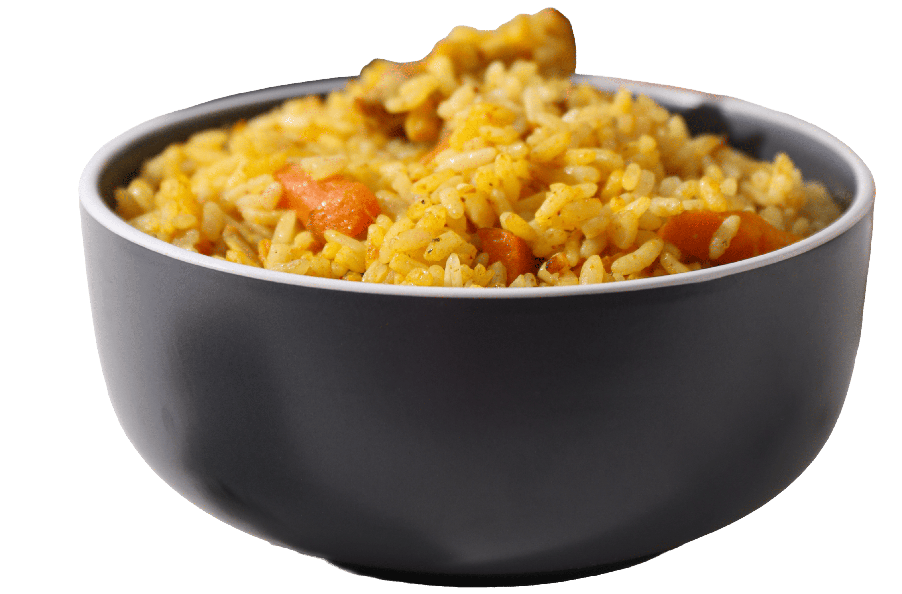

Em uma panela, aqueça o óleo e refogue o alho e a cebola até ficarem dourados.
Coloque os pequis na panela e refogue por alguns minutos para liberar o sabor.
Adicione o arroz e misture bem com os temperos e o pequi.
Acrescente a água e o sal, misture e deixe cozinhar até o arroz ficar macio e a água secar.
Desligue o fogo e finalize com cheiro-verde.
O pequi tem espinhos no caroço, então ele deve ser roído com cuidado, sem morder diretamente.
O Arroz com Pequi é um prato típico da região Centro-Oeste do Brasil, especialmente do estado de Goiás. Sua origem está ligada às tradições do Cerrado, onde o pequi já era consumido por povos indígenas muito antes da chegada dos colonizadores. No século XVIII, durante a expansão dos Bandeirantes pelo interior do Brasil, o fruto passou a fazer parte da alimentação dos moradores da região. Com o tempo, o arroz com pequi tornou-se um símbolo da cultura goiana. Hoje ele é preparado em casas e festas regionais, sendo considerado um prato importante da gastronomia do Centro-Oeste brasileiro.